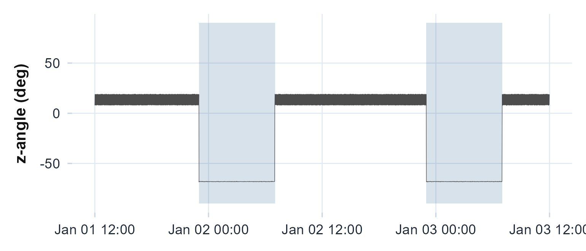

You have an ActiGraph recording for one person and a practical question. Does this person have a stable daily rhythm, how strong is it, and is it real or could it be noise? This article answers that question end to end on one bundled recording. By the end you will be able to read the file, describe the rhythm without assuming a shape, test whether it is real, locate and bound its period, probe its finer structure, and write out a one-row summary you can stack across people.
The method assumes a multi-day activity-count series with timestamps,
which is what an ActiGraph .agd file holds and what counts
exported from any source can supply. Every number and figure below is
reproducible from the installed package.
The recording
read.agd() opens the .agd SQLite file and
auto-detects the epoch length and axes; agd.counts()
returns a tidy data frame with $axis1 (the vertical-axis
counts) and $timestamp. One recording ships with the
package, reached through example_agd().
agd <- agd.counts(read.agd(example_agd(1), verbose = FALSE))
head(agd[, c("timestamp", "axis1")])
#> timestamp axis1
#> 1 2025-10-07 20:28:00 2676
#> 2 2025-10-07 20:29:00 1380
#> 3 2025-10-07 20:30:00 4126
#> 4 2025-10-07 20:31:00 5763
#> 5 2025-10-07 20:32:00 4076
#> 6 2025-10-07 20:33:00 4043Read the actogram top to bottom before computing anything. It is the fastest way to see whether there is a rhythm to measure at all.
plot_actogram(agd$axis1, agd$timestamp)
Double-plotted actogram: each row is one day shown twice across 48 hours, so a stable rhythm forms a vertical band of activity at the same clock time each day; scattered fill marks a fragmented or shifting rhythm.
In this recording the active rows do not stack into one clean vertical band; they slide a little later or earlier from day to day, which is the low interdaily stability the next section puts a number on.
The nonparametric rhythm
circadian.rhythm() describes the rest-activity pattern
without assuming a waveform. It returns interdaily stability (IS) and
intradaily variability (IV), introduced by Witting et al. (1990),
together with the relative amplitude (RA) and the least- and most-active
windows L5 and M10 of van Someren et al. (1999), each with its onset
time.
rhythm <- circadian.rhythm(agd$axis1, agd$timestamp)
rhythm
#>
#> Circadian Rhythm Analysis
#>
#> Data Summary
#> Days analyzed: 8
#> Valid circadian days: 6
#> Epoch length: 60 seconds
#>
#> Non-Parametric Metrics (IS/IV: Witting et al. 1990; RA/L5/M10: van Someren et al. 1999)
#> L5 (least active 5h): 6.10 counts/min, onset 01:28
#> M10 (most active 10h): 602.93 counts/min, onset 12:02
#> L1 (least active 1h): 3.10 counts/min, onset 02:35
#> M1 (most active 1h): 1175.51 counts/min, onset 17:43
#> Relative Amplitude (RA): 0.9800 (range 0-1, higher=stronger rhythm)
#> Interdaily Stability (IS): 0.2279 (range 0-1, higher=more consistent)
#> Intradaily Variability (IV): 1.0008 (near 0 = sine, near 2 = noise)
#> Phi (autocorrelation): 0.4151 (higher=more predictable)
#>
#> Sleep-Based & Variability Metrics
#> Sleep Regularity Index: Not calculated (requires sleep_state input)
#> Onset timing variability: 2.23 hours
#> L5 timing variability: 0.77 hours (circular SD)
#> M10 timing variability: 3.70 hours (circular SD)
#>
#> References: Witting (1990), van Someren (1999)Read the three headline numbers together. IS ranges 0 to 1 and rises
as the daily pattern repeats more exactly from day to day; IV runs from
about 0 (a smooth sine) to about 2 (noisy or split into ultradian
bouts); RA ranges 0 to 1 and grows with the contrast between an active
day and a restful night. Here a high RA (about 0.98) sits with a low IS
(about 0.23): a strong day-night contrast carried on irregular timing.
The header also notes that six of the eight calendar days qualified,
because circadian.rhythm() sets aside days with too little
valid recording before computing the metrics.
Cosinor and the rhythmicity test
cosinor.analysis() fits a 24-hour cosine and returns the
MESOR (rhythm-adjusted mean), amplitude, and acrophase, the clock time
of the peak (Cornelissen 2014).
cos <- cosinor.analysis(agd$axis1, agd$timestamp, period = 24)
c(mesor = unname(cos$mesor), amplitude = unname(cos$amplitude),
acrophase = unname(cos$acrophase))
#> mesor amplitude acrophase
#> 327.25 295.63 16.92The acrophase is circular: it is a clock time, so
23.5 and 0.5 are an hour apart, not 23 hours apart, and it is only
interpretable once the amplitude is distinguishable from zero.
rhythmicity.test() is that check, the zero-amplitude F-test
of Nelson et al. (1979), reported with the percent of variance the
rhythm explains.
rhythmicity.test(agd$axis1, agd$timestamp, cosinor_result = cos)
#> Cosinor Rhythmicity Test (Halberg zero-amplitude F-test)
#>
#> H0: amplitude = 0 (no rhythm)
#> Period: 24 h
#> F(2, 21): 8.15
#> P-value: 0.0024
#> Percent rhythm: 43.7% (R-squared = 0.4371)
#> Rhythmic: YES (alpha = 0.05)A small p-value rejects the flat-line null. Here the test is clearly significant (p well under 0.05) and the single cosine explains a little over forty percent of the variance, so the acrophase above is worth reading. The percent-rhythm also reminds you that more than half the variance is structure a single cosine misses. Overlay the fit to see what it is and is not catching.
plot_extended_cosinor(agd$axis1, agd$timestamp)
Hourly activity with the fitted 24-hour cosine overlaid; the peak of the curve is the acrophase and its height above the MESOR line is the amplitude. Systematic departures from the curve are where a single cosine is too smooth for real rest-activity data.
Look where the fitted curve and the hourly points part company: the
single cosine runs too smooth through the early hours, and that gap is
the structure the percent-rhythm says one cosine leaves on the table.
When you need the joint uncertainty in amplitude and acrophase together,
cosinor.confidence.ellipse(cos) returns the Bingham et
al. (1982) ellipse; an ellipse that encloses the origin is the geometric
form of “no detectable rhythm”.
The period
A cosinor assumes exactly 24 hours. circadian.period()
does not: it runs a Lomb-Scargle periodogram over the 18 to 30 hour band
and returns the dominant period tau, with a false-alarm
probability in $p_value (Lomb 1976; Scargle 1982; Baluev
2008).
per <- circadian.period(agd$axis1, agd$timestamp)
c(tau = per$tau, p_value = per$p_value)
#> tau p_value
#> 2.543077e+01 9.388299e-97The strongest cycle here sits near 25.4 hours, meaningfully longer
than a solar day, and the false-alarm probability is essentially zero,
so the cycle itself is not in doubt. Its exact length is less certain.
period.ci() refines that peak and bootstraps it with a
circular block bootstrap (Kunsch 1989; Politis and Romano 1992), which
respects the autocorrelation in activity data, and the interval it
returns is wide enough to span 24 hours. On a single recording the
period is clearly present but not pinned to the hour. Passing
seed = 1 makes the bootstrap reproducible; the 50
replicates here keep the vignette fast, and a real interval would use
more.
period.ci(agd$axis1, agd$timestamp, n_boot = 50, seed = 1)
#> Circadian Period with Bootstrap Confidence Interval
#>
#> tau: 24.980 h
#> 95% CI: [23.484, 26.342] h
#> SE: 1.220 h
#> Method: circular block residual bootstrap (50/50 valid reps)
plot_periodogram(agd$axis1, agd$timestamp)
Lomb-Scargle spectral power across candidate periods; the tallest peak is the dominant rhythm, and a peak rising above the significance line rejects the no-rhythm null.
The chi-square periodogram of Sokolove and Bushell (1978) asks the same question a different way, scoring each trial period by how much of the variance folds onto it. A second estimator that clears its own threshold at the same period is reassurance that the peak is real rather than an artifact of one method.
plot_chisq(agd$axis1, agd$timestamp)
Chi-square (Sokolove-Bushell) periodogram: the Qp statistic against trial period, with the significance threshold. The peak should fall at the period the Lomb-Scargle periodogram found.
Watching the period drift
A single periodogram averages over the whole recording.
circadian.spectrogram() slides a window across it and
recomputes the periodogram in each, so you can see the dominant period
move, the chronobiology equivalent of a music spectrogram.
circadian.spectrogram(agd$axis1, agd$timestamp, step_hours = 24)$plot
Period (vertical) against time (horizontal), coloured by spectral power. A horizontal band of colour is a stable period; a band that bends upward or downward is a rhythm lengthening or shortening across the recording.
Follow the band of colour left to right: here it drifts upward, the dominant period lengthening across the recording rather than holding at 24 hours. Read the later windows with some caution, since they ride the upper edge of the search band, where a weakening rhythm and a genuinely longer period can look alike.
Nonlinear structure
Two recordings can share the same IS and amplitude yet differ in
their moment-to-moment dynamics. fractal.dfa() estimates
the detrended-fluctuation exponent alpha, the long-range temporal
correlation in the series (Peng et al. 1994; Hu et al. 2001).
fractal.dfa(agd$axis1)$alpha
#> [1] 0.9263546An alpha near 1 is the “1/f” scaling typical of healthy physiological output; near 0.5 is uncorrelated noise; well above 1 is a smoother, more random-walk-like signal. Here alpha comes out near 0.93, close to the 1/f end, so this series carries genuine long-range correlation rather than looking like noise. The log-log fit shows whether one exponent holds across all time scales.
plot_dfa(agd$axis1)
Detrended fluctuation on log-log axes; the slope is the DFA exponent alpha. One straight line is monofractal scaling, a visible kink is a crossover between short- and long-range dynamics.
Two further questions use the same series and a single call each.
multiscale.entropy() asks how the complexity of the signal
changes as you coarse-grain it across time scales (Costa et al. 2002),
and mfdfa() asks whether one scaling exponent is enough or
the series is genuinely multifractal (Kantelhardt et al. 2002). Their
help pages carry the math; here it is enough to know they refine, not
replace, the single alpha above.
A fuller profile, and a decomposition
The cosinor fits one cosine to the day. circadian.flm()
fits a functional model of the same 24-hour profile with several Fourier
harmonics, so it follows the real, asymmetric shape of the day instead
of forcing a symmetric curve (Wang et al. 2011); the single cosine is
its one-harmonic special case.
flm <- circadian.flm(agd$axis1, agd$timestamp)
flm
#> Functional Linear Model (24-hour activity profile)
#>
#> Basis: fourier (order 4, 9 terms)
#> Period: 24 hours
#> Days / profile points: 8 / 24
#>
#> Model fit:
#> R-squared: 0.7352
#> AIC: 406.84
#> F-statistic: 5.21 (p = 0.003)
#>
#> Dominant harmonic: H1, amplitude 303.40, acrophase 16.99 h
#>
#> Peak 956.3 at 19.2 h; trough -117.7 at 3.8 h
#>
#> Reference: Wang et al. (2011)
ggplot(flm$smooth_curve, aes(t, activity)) +
geom_point(data = flm$fitted_profile, aes(t, observed), colour = "grey55") +
geom_line(colour = "#236192", linewidth = 1) +
labs(x = "Hour of day", y = "Activity") +
theme_actiRhythm()
The functional fit (line) over the averaged hourly profile (points). The extra Fourier harmonics let the curve follow the asymmetric morning rise and evening decline that a single cosine smooths over.
The extra harmonics buy back the variance the single cosine left on the table, and the curve now bends through the morning rise the one cosine ran straight past.
circadian.ssa() takes the opposite view. Instead of an
average day it decomposes the whole recording with singular spectrum
analysis into additive components: a slow trend, a circadian pair, and
noise (Golyandina and Zhigljavsky 2013). The trajectory matrix grows
with the series, so bin a long minute recording to a coarser epoch
first.
bin <- as.integer(as.numeric(agd$timestamp) %/% 600) # 10-minute bins
counts10 <- tapply(agd$axis1, bin, sum)
t10 <- as.POSIXct(as.numeric(names(counts10)) * 600, origin = "1970-01-01", tz = "UTC")
ssa <- circadian.ssa(as.numeric(counts10), t10)
ssa
#> Singular Spectrum Analysis (Basic SSA)
#>
#> Window length L: 144 epochs (24.0 h)
#> Series length n: 993 (K = 850, span 6.9 days)
#> Components kept: 10 of rank 144
#>
#> Variance explained (leading components):
#> ET1 lambda = 0.2929 (cumulative 0.2929)
#> ET2 lambda = 0.0814 (cumulative 0.3743)
#> ET3 lambda = 0.0578 (cumulative 0.4321)
#> ET4 lambda = 0.0295 (cumulative 0.4616)
#> ET5 lambda = 0.0293 (cumulative 0.4909)
#>
#> Grouping:
#> Trend: components 1
#> Circadian: components 2, 3 (13.9% of variance)
#> Fundamental period: 24.49 h
#>
#> Reference: Golyandina and Zhigljavsky (2013)
ggplot(data.frame(time = t10, circadian = ssa$circadian), aes(time, circadian)) +
geom_line(colour = "#236192") +
labs(x = "Time", y = "Circadian component") +
theme_actiRhythm()
The circadian component singular spectrum analysis pulls out of the whole recording: the daily rhythm separated from the slow trend and the noise.
For this recording the circadian pair carries about 14 percent of the variance with a fundamental period near 24.5 hours, the same slightly-long period the periodogram found earlier, now isolated as a clean component of the raw series.
Rest-activity transitions
state.transitions() summarises how readily the subject
switches between rest and activity, the kRA (rest-to-active) and kAR
(active-to-rest) rates that capture fragmentation a single amplitude
cannot (Lim et al. 2011).
st <- state.transitions(agd$axis1)
c(kRA = st$kRA, kAR = st$kAR)
#> kRA kAR
#> 0.03920806 0.10681627For this subject kAR runs well above kRA: once active they settle back to rest quickly, but once at rest they stay there. That asymmetry is the fragmentation a single amplitude cannot see.
Pinpointing sleep and wake
state.transitions() gives one pair of rates for the
whole recording. sleep.changepoints() instead locates the
sleep-onset and wake-onset of each night directly from the counts, with
no scored sleep required: a 24-hour cosinor bounds each rest and active
span roughly, and a change point inside each bound places the precise
transition (Chen and Sun 2024).
cp <- sleep.changepoints(agd$axis1, agd$timestamp)
cp
#> Change-Point Sleep/Wake Detection (CircaCP)
#>
#> Span: 6.9 days (9919 epochs)
#> Cosinor acrophase: 20.5 h
#> Change points: 14 (7 sleep episodes)
#> Mean sleep duration: 11.1 h
#>
#> First sleep episodes:
#> sleep 10-07 22:36 -> wake 10-08 07:09 (8.6 h)
#> sleep 10-08 23:30 -> wake 10-09 07:50 (8.3 h)
#> sleep 10-09 21:30 -> wake 10-10 12:11 (14.7 h)
#>
#> Reference: Chen and Sun (2024)
cps <- cp$changepoints
cps$clock <- as.numeric(format(cps$time, "%H")) + as.numeric(format(cps$time, "%M")) / 60
ggplot(cps, aes(time, clock, colour = type)) +
geom_point(size = 3) +
scale_colour_manual(values = c("sleep onset" = "#236192", "wake onset" = "#E69F00")) +
labs(x = "Date", y = "Clock hour", colour = NULL) +
theme_actiRhythm()
Each detected sleep onset (blue) and wake onset (orange) by date and clock time. The detector reads the per-night sleep and wake timing directly from the counts.
For this recording the detector finds seven nights, sleep onset late in the evening and wake onset around seven in the morning, with most nights near eight to nine hours of rest. That is the per-night sleep and wake timing the single transition rate above cannot localise.
Every rest bout, naps included
sleep.changepoints() finds the one main rest bout of
each cycle. rest.periods() takes the complementary view,
consolidating every spell of low activity into a rest bout, however many
a day holds, daytime naps and fragmented rest included (Roenneberg et
al. 2015). Each epoch is compared to a fraction of its own 24-hour
activity level, and runs that stay below it grow into consolidated
bouts.
rp <- rest.periods(agd$axis1, agd$timestamp)
rp
#> Consolidated Rest Periods (Roenneberg/MASDA)
#>
#> Bouts detected: 9 (1.5 per day over 6 days)
#> Total rest: 61.3 h
#> Main bouts / naps: 9 / 0
#>
#> First bouts:
#> main 10-08 00:49 -> 10-08 07:09 (381 min)
#> main 10-08 23:31 -> 10-09 07:50 (500 min)
#> main 10-10 00:12 -> 10-10 06:57 (406 min)
#>
#> Reference: Roenneberg et al. (2015); Loock et al. (2021)
ggplot(rp$rest_periods, aes(onset, bout, xend = offset, yend = bout, colour = type)) +
geom_segment(linewidth = 3) +
scale_colour_manual(values = c(main = "#236192", nap = "#E69F00")) +
labs(x = "Time", y = "Rest bout", colour = NULL) +
theme_actiRhythm()
Each consolidated rest bout as a bar from onset to offset. Detecting more than one bout a day, including naps, is what separates this from the one-per-cycle change-point detector.
For this recording it consolidates nine rest bouts across six days, more than one a day, so a few days carry a second rest beyond the main night.
rest.crespo() reaches a comparable result by a different
route, rank-order filtering and binary morphology rather than
seed-and-grow consolidation (Crespo et al. 2012); running both gives an
independent cross-check of where a recording’s rest bouts fall. Neither
applies a wear-time filter, so gate the counts on valid wear first if a
recording has device-off stretches.
Scoring sleep and its regularity
The metrics so far describe the rhythm; the next need a per-epoch
sleep or wake label. sleep.cole.kripke() produces that
label directly from the counts, the standard count-based classifier for
adults (Cole et al. 1992), with sleep.sadeh() as the
children-and-adolescents alternative.
state <- sleep.cole.kripke(agd$axis1)
table(state)
#> state
#> S W
#> 7646 2273Count-based scoring labels every low-activity epoch as sleep, so a
mostly sedentary recording scores a high sleep fraction; what matters
downstream is how regular that label is from day to day.
sleep.regularity.index() measures exactly that, the
probability that two epochs 24 hours apart share the same state
(Phillips et al. 2017).
sleep.regularity.index(state, agd$timestamp)
#> [1] 58.46When you also have explicit sleep periods,
social.jet.lag() returns the work-day to free-day mid-sleep
difference (Wittmann et al. 2006) and lids() the locomotor
inactivity during sleep that tracks ultradian sleep structure (Winnebeck
et al. 2018).
A wider set of methods
The core above answers most questions. actiRhythm also carries a wider set of circadian methods for finer or more specialized work, shown here on the same recording.
Finer nonparametric metrics
intradaily.variability.multiscale() averages intradaily
variability across bin sizes, activity.extrema()
generalizes L5 and M10 to any window with onset and midpoint times,
dichotomy.index() measures how cleanly rest separates from
the active day (Mormont et al. 2000), and circadian.daily()
reports each day on its own so within-recording drift shows.
rest.activity.fragmentation() adds the rest and active
bout-length view that complements the kRA/kAR rates above.
daily <- circadian.daily(agd$axis1, agd$timestamp)
dichotomy.index(agd$axis1, agd$timestamp, rest = state == "S")
#> Dichotomy Index (I<O)
#>
#> I<O: 100.0%
#> Active median: 652.0 counts
#> Rest / active epochs: 7646 / 2273
ggplot(daily$daily, aes(date, M10_onset_h)) +
geom_line(colour = "grey60") + geom_point(colour = "#236192", size = 2) +
labs(x = NULL, y = "M10 onset (h)") +
theme_actiRhythm()
The M10 onset (the start of the most active ten hours) for each day. Reporting it per day, rather than pooled, shows how steady the active phase is across the recording.
The shape and phase of the day
cosinor.multicomponent() adds harmonics to the single
cosine and picks how many by information criterion,
activity.onset.offset() marks the daily activity onset and
offset by the relative-difference method (Roenneberg et al. 2003), and
phase.concentration() tests whether the daily phase markers
cluster (Rayleigh and Hermans-Rasson).
cosinor.multicomponent(agd$axis1, agd$timestamp)
#> Multicomponent Cosinor
#>
#> Selected harmonics: 3 (by AIC) MESOR: 330.1 R-squared: 0.640
#>
#> harmonic amplitude acrophase_h
#> 1 294.33 20.56
#> 2 173.67 11.03
#> 3 42.81 0.14
phase.concentration(daily$daily$M10_onset_h)
#> Phase Concentration Tests
#>
#> n days: 7
#> Mean direction: 13.86 h R: 0.679
#> Rayleigh: Z = 3.23, p = 0.0332
#> Hermans-Rasson: T = 110.5, p = 0.0205Time-frequency and adaptive decomposition
On the ten-minute series from earlier,
circadian.wavelet() gives the time-frequency power
spectrum, ultradian.bandpower() splits the variance into
ultradian bands, and circadian.emd() with
hilbert.huang() extracts the circadian component
data-adaptively and tracks its instantaneous period.
wav <- circadian.wavelet(as.numeric(counts10), t10, epoch_length = 600)
ggplot(data.frame(period = wav$period_hours, power = wav$global_power),
aes(period, power)) +
geom_line(colour = "#236192") +
geom_vline(xintercept = 24, linetype = 2, colour = "grey50") +
scale_x_continuous(trans = "log2") +
labs(x = "Period (h, log scale)", y = "Wavelet power") +
theme_actiRhythm()
The global wavelet power spectrum. The peak sits at the circadian period (dashed line at 24 hours), recovered without assuming a fixed cosine shape.
emd <- circadian.emd(as.numeric(counts10), t10, epoch_length = 600)
hilbert.huang(emd)
#> Hilbert-Huang Instantaneous Dynamics
#>
#> No circadian IMF to analyseRegistration, residual structure, and states
curve.registration() aligns the days on their
active-phase landmark and reports a scale-invariant chronotype phase,
residual.spectrum() examines what the cosinor leaves
behind, and rest.hmm() fits a state-space model whose
decoded path gives the probability of rest across the day.
hmm <- rest.hmm(as.numeric(counts10), t10)
ggplot(hmm$tod_profile, aes(hour, p_rest)) +
geom_col(fill = "#236192") +
labs(x = "Hour of day", y = "P(rest)") +
theme_actiRhythm()
The 24-hour rest-probability profile from the state-space model: the share of each clock hour the decoded path spends in the rest state.
From raw acceleration
Everything so far runs on activity counts. Raw accelerometer files
also record the gravity component, and with it body posture, which
counts cannot carry. actiRhythm reads raw ActiGraph .gt3x,
Axivity .cwa, and GENEActiv .bin files,
auto-calibrates them, and derives the three raw metrics used across the
field: ENMO, MAD, and the z-angle.
raw.metrics() takes a file path. Raw acceleration is far
too large to bundle, so for a reproducible illustration
example_raw() synthesises a recording; a real file is read
the same way, with raw.metrics("recording.cwa").
raw <- example_raw(days = 2) # synthetic 2-day recording (or a real file path)
m <- raw.metrics(raw, epoch = 60) # per-epoch ENMO (mg), MAD, and the z-angle
head(m)
#> time ENMO MAD anglez
#> 1 2024-01-01 12:00:00 43.95883 24.78791 8.280445
#> 2 2024-01-01 12:01:00 43.13860 24.89003 14.666095
#> 3 2024-01-01 12:02:00 44.56626 25.55921 8.287697
#> 4 2024-01-01 12:03:00 44.25995 24.90778 14.705513
#> 5 2024-01-01 12:04:00 44.79032 25.36485 8.292428
#> 6 2024-01-01 12:05:00 44.17071 24.72920 14.755796ENMO is the activity signal, and every method above takes it
directly: pass it to circadian.rhythm(), or let
circadian.raw() run the whole analysis from the file.
cr <- circadian.rhythm(m$ENMO, m$time)
c(IS = cr$IS, IV = cr$IV, RA = cr$RA)
#> IS IV RA
#> 1.0000 0.3823 0.9873Calibration is applied first inside raw.metrics().
auto.calibrate() finds the per-axis gain and offset that
return still periods to the 1 g sphere (van Hees 2014); on data with a
known distortion it returns the original gain and offset to within a
fraction of a percent.
set.seed(1)
u <- matrix(rnorm(40 * 3), 40, 3); u <- u / sqrt(rowSums(u^2))
cal <- do.call(rbind, lapply(seq_len(40), function(i)
matrix(rep(u[i, ] / c(1.03, 0.97, 1.01) + c(0.04, -0.03, 0.02), each = 300),
300, 3) + rnorm(900, 0, 0.004)))
auto.calibrate(data.frame(x = cal[, 1], y = cal[, 2], z = cal[, 3]),
fs = 30)[c("scale", "offset")]
#> $scale
#> [1] 1.0301368 0.9701036 1.0099054
#>
#> $offset
#> [1] 0.04000814 -0.02992012 0.01990532The z-angle supports a sleep detector that needs no diary and works
from posture, which the counts cannot do. rest.spt() finds
the nightly sleep-period-time window from the distribution of angle
change (HDCZA, van Hees 2018), sib.vanhees() scores
sustained-inactivity bouts (van Hees 2015), and
sleep.from.spt() combines them into onset, wake and
efficiency. detect.nonwear.raw() flags a stationary,
taken-off device (low standard deviation and range over the hour, van
Hees 2011), and passing its mask as wear keeps a device-off
stretch from being read as one long night. Computed here on the
synthetic recording at a 5-second epoch, with the detected windows
shaded.
m5 <- raw.metrics(raw, epoch = 5, metrics = "anglez")
wear <- detect.nonwear.raw(raw, epoch = 5)
spt <- rest.spt(m5$anglez, m5$time, epoch_length = 5, wear = wear)
sib <- sib.vanhees(m5$anglez, epoch_length = 5)
sleep <- sleep.from.spt(spt, sib, m5$time, epoch_length = 5)
thin <- seq(1, nrow(m5), by = 12)
ggplot() +
geom_rect(data = spt, aes(xmin = onset, xmax = offset, ymin = -90, ymax = 90),
fill = "#236192", alpha = 0.18) +
geom_line(data = m5[thin, ], aes(time, anglez), linewidth = 0.2, colour = "grey30") +
labs(x = NULL, y = "z-angle (deg)") +
theme_actiRhythm()
The z-angle of the synthetic recording at 5-second epochs, with the two nightly sleep-period-time windows detected from the angle alone (HDCZA), gated by raw non-wear, shaded.
sleep[, c("date", "onset", "offset", "tst", "efficiency")]
#> date onset offset tst efficiency
#> 1 2024-01-01 2024-01-01 23:00:00 2024-01-02 07:00:00 8.001389 0.9968853
#> 2 2024-01-02 2024-01-02 23:00:00 2024-01-03 07:00:00 8.001389 0.9968853Two more estimators measure fragmentation, and both run on the counts
already loaded: activity.balance.index() maps a
detrended-fluctuation exponent to a 0 to 1 score that peaks at the
healthy 1/f balance (Danilevicz 2024), and
transition.probability() gives the closed-form
rest-to-active and active-to-rest transition probabilities.
activity.balance.index(fractal.dfa(agd$axis1))
#> $ABI_overall
#> [1] 0.9900827
#>
#> $ABI_short
#> [1] 0.9943423
#>
#> $ABI_long
#> [1] 0.9820051
transition.probability(agd$axis1)[c("tp_ra_mle", "tp_ar_mle")]
#> $tp_ra_mle
#> [1] 0.04853705
#>
#> $tp_ar_mle
#> [1] 0.1366603Agreement with GGIR
The raw metrics and the z-angle sleep detector reimplement the van Hees algorithms that GGIR established (Migueles et al. 2019), so the whole chain should reproduce GGIR’s output, not just be internally consistent: calibration, the raw metrics, and the z-angle sleep detection. Run side by side on the same real 7-day wrist recording (118,800 five-second epochs), they agree at every stage.
Calibration matches to about three decimals, with scale 1.001 / 0.995
/ 0.999 and the same 0.006 g calibration error, and the offsets agree in
magnitude once the two sign conventions are lined up: GGIR applies
scale * x + offset, actiRhythm
(x - offset) * scale. Per-epoch ENMO and z-angle both
correlate at r = 0.99, with mean absolute differences of 3.6 mg and 2.2
degrees. The HDCZA sleep-period window lands within about five to ten
seconds of GGIR each night, and total sleep time and WASO agree to about
a minute on the valid nights. Non-wear matches to within 0.05 per worn
day, and the wider gap between 0.41 and 0.52 is entirely the
parked-device tail that both tools already exclude.
The comparison is reproducible on your own file with GGIR installed:
library(GGIR)
P <- load_params(); P$params_general$windowsizes <- c(5, 900, 3600)
I <- g.inspectfile(file, params_rawdata = P$params_rawdata, params_general = P$params_general)
ggir <- g.getmeta(file, params_rawdata = P$params_rawdata, params_general = P$params_general,
params_cleaning = P$params_cleaning, inspectfileobject = I)$metashort
acti <- raw.metrics(file, epoch = 5)
# Align on wall-clock time: the .gt3x stores local time and the two tools anchor it
# slightly differently, so match the clock label rather than absolute seconds.
gkey <- gsub("T", " ", substr(as.character(ggir$timestamp), 1, 19))
akey <- format(acti$time, "%Y-%m-%d %H:%M:%S")
m <- merge(data.frame(k = gkey, ge = ggir$ENMO * 1000, ga = ggir$anglez),
data.frame(k = akey, ae = acti$ENMO, aa = acti$anglez), by = "k")
c(ENMO = cor(m$ge, m$ae), anglez = cor(m$ga, m$aa))The sleep figures come from rest.spt() and
sleep.from.spt() run against GGIR’s full part 1 to 4
pipeline (HASPT.algo = "HDCZA"). On every clean night the
window and the parameters match to seconds and to about a minute. They
diverge only on nights GGIR flags as heavily invalid, 40 to 53%
non-wear, where the two handle wear differently. That is an edge case on
badly degraded data, not a difference in the algorithm.
ActiGraph idle-sleep gaps are imputed as zeros by
read.gt3x, which would otherwise collapse the z-angle to a
constant during quiescent periods. Like GGIR, actiRhythm carries the
last gravity vector forward through those gaps, so the angle stays
correct through the still periods the sleep detector relies on.
Pooling the evidence
Each test above answers “is there a rhythm?” in its own language.
consensus.rhythmicity() runs four of them, the cosinor
F-test, the Bingham ellipse, the Lomb-Scargle false-alarm probability,
and the chi-square periodogram, and reports both a majority vote and a
Fisher-combined p-value (Fisher 1925).
consensus.rhythmicity(agd$axis1, agd$timestamp)
#> Consensus Rhythmicity (multi-method)
#>
#> cosinor F-test p=0.0024 rhythmic
#> Bingham ellipse rhythmic
#> Lomb-Scargle FAP p=<2e-16 rhythmic
#> chi-square periodogram p=1 no
#>
#> Votes: 3 / 4 methods
#> Fisher p: <2e-16
#> Consensus: RHYTHMIC (alpha = 0.05)For this recording three of the four tests agree that a rhythm is
present and the Fisher-combined p-value is effectively zero, so the
verdict is unambiguous even where one method on its own might hesitate.
A one-row summary is then easy to assemble and rbind()
across subjects.
data.frame(
IS = rhythm$IS,
IV = rhythm$IV,
RA = rhythm$RA,
tau = per$tau,
amplitude = cos$amplitude,
acrophase = cos$acrophase,
dfa_alpha = fractal.dfa(agd$axis1)$alpha
)
#> IS IV RA tau amplitude acrophase dfa_alpha
#> cos_term 0.2279 1.0008 0.98 25.43077 295.63 16.92 0.9263546Read across, this row is one person: a strongly amplitude-modulated rhythm whose timing is irregular from day to day, running on a period a little over 24 hours.
A whole study at once
You have now run the whole arc on one recording: read it, describe
the rhythm without assuming a shape, test whether it is real, locate and
bound its period, probe its finer structure, and pool the separate tests
into one verdict, ending with a single summary row. Most studies,
though, are a folder of recordings rather than one, and that is what
circadian.batch() is for. It runs this entire arc over
every .agd file in a directory and returns one row per
recording, so a cohort becomes a single data frame you can model. A file
that fails to read is reported in an error column instead
of stopping the run. The package ships two recordings, so this runs as a
real, if small, batch.
batch <- circadian.batch(
system.file("extdata", package = "actiRhythm"),
verbose = FALSE
)
batch[, c("file", "IS", "IV", "RA", "period_tau", "rhythm_p_value")]
#> file IS IV RA period_tau rhythm_p_value
#> 1 MOS2E39230594_60sec.agd 0.2279 1.0008 0.9800 25.43077 0.002396228
#> 2 MOS2E3923063660sec.agd 0.4230 1.2687 0.7706 24.09425 0.050151893Each row is one subject, described by the same metrics as the walkthrough above, and already the two differ: the second is steadier from day to day (higher IS) but less amplitude-modulated (lower RA), and its rhythm clears significance only at the margin. Point the call at your own folder and nothing else changes.
When you want the full analysis for a single recording rather than a
summary row, circadian.workbook() writes every table to a
multi-sheet Excel file: a summary row plus the hourly profile, both
periodograms, the fluctuation and multifractal spectra, and a data
dictionary.
circadian.workbook(agd$axis1, agd$timestamp, file = "subject01.xlsx")Where next
-
?circadian.rhythm,?cosinor.analysis,?circadian.period,?fractal.dfa,?consensus.rhythmicitygive the per-function help with full references. -
?circadian.batchand?circadian.workbookare the study-scale entry points. - For a multi-subject design,
population.cosinor()andcosinor.compare()give the mean rhythm and a two-group test (Bingham/Hotelling); for covariates, repeated measures, or nesting, feed the per-subject metrics this package emits (MESOR, amplitude, acrophase, IS, IV, RA, period) into a mixed model withlme4/nlmealongside your design. The package gives you the metrics; you supply the multilevel model. - Cite the package with
citation("actiRhythm"), and reportpackageVersion("actiRhythm")with your results so the analysis stays reproducible across releases. - Questions and bugs: https://github.com/rdazadda/actiRhythm/issues.
References
Witting W, Kwa IH, Eikelenboom P, Mirmiran M, Swaab DF (1990). Alterations in the circadian rest-activity rhythm in aging and Alzheimer’s disease. Biological Psychiatry 27(6):563-572. doi:10.1016/0006-3223(90)90523-5
Van Someren EJW, Swaab DF, Colenda CC, Cohen W, McCall WV, Rosenquist PB (1999). Bright light therapy: improved sensitivity to its effects on rest-activity rhythms in Alzheimer patients by application of nonparametric methods. Chronobiology International 16(4):505-518. doi:10.3109/07420529908998724
Nelson W, Tong YL, Lee JK, Halberg F (1979). Methods for cosinor-rhythmometry. Chronobiologia 6(4):305-323.
Cornelissen G (2014). Cosinor-based rhythmometry. Theoretical Biology and Medical Modelling 11:16. doi:10.1186/1742-4682-11-16
Bingham C, Arbogast B, Cornelissen Guillaume G, Lee JK, Halberg F (1982). Inferential statistical methods for estimating and comparing cosinor parameters. Chronobiologia 9(4):397-439.
Lomb NR (1976). Least-squares frequency analysis of unequally spaced data. Astrophysics and Space Science 39(2):447-462. doi:10.1007/BF00648343
Scargle JD (1982). Studies in astronomical time series analysis. II. Statistical aspects of spectral analysis of unevenly spaced data. The Astrophysical Journal 263:835-853. doi:10.1086/160554
Baluev RV (2008). Assessing the statistical significance of periodogram peaks. Monthly Notices of the Royal Astronomical Society 385(3):1279-1285. doi:10.1111/j.1365-2966.2008.12689.x
Kunsch HR (1989). The jackknife and the bootstrap for general stationary observations. The Annals of Statistics 17(3):1217-1241. doi:10.1214/aos/1176347265
Politis DN, Romano JP (1992). A circular block-resampling procedure for stationary data. In: LePage R, Billard L (eds), Exploring the Limits of Bootstrap, 263-270. Wiley, New York.
Sokolove PG, Bushell WN (1978). The chi square periodogram: its utility for analysis of circadian rhythms. Journal of Theoretical Biology 72(1):131-160. doi:10.1016/0022-5193(78)90022-X
Peng C-K, Buldyrev SV, Havlin S, Simons M, Stanley HE, Goldberger AL (1994). Mosaic organization of DNA nucleotides. Physical Review E 49(2):1685-1689. doi:10.1103/PhysRevE.49.1685
Hu K, Ivanov PC, Chen Z, Carpena P, Stanley HE (2001). Effect of trends on detrended fluctuation analysis. Physical Review E 64(1):011114. doi:10.1103/PhysRevE.64.011114
Costa M, Goldberger AL, Peng C-K (2002). Multiscale entropy analysis of complex physiologic time series. Physical Review Letters 89(6):068102. doi:10.1103/PhysRevLett.89.068102
Kantelhardt JW, Zschiegner SA, Koscielny-Bunde E, Havlin S, Bunde A, Stanley HE (2002). Multifractal detrended fluctuation analysis of nonstationary time series. Physica A 316(1-4):87-114. doi:10.1016/S0378-4371(02)01383-3
Lim ASP, Yu L, Costa MD, Buchman AS, Bennett DA, Leurgans SE, Saper CB (2011). Quantification of the fragmentation of rest-activity patterns in elderly individuals using a state transition analysis. Sleep 34(11):1569-1581. doi:10.5665/sleep.1400
Phillips AJK, Clerx WM, O’Brien CS, Sano A, Barger LK, Picard RW, Lockley SW, Klerman EB, Czeisler CA (2017). Irregular sleep/wake patterns are associated with poorer academic performance and delayed circadian and sleep/wake timing. Scientific Reports 7:3216. doi:10.1038/s41598-017-03171-4
Wittmann M, Dinich J, Merrow M, Roenneberg T (2006). Social jetlag: misalignment of biological and social time. Chronobiology International 23(1-2):497-509. doi:10.1080/07420520500545979
Winnebeck EC, Fischer D, Leise T, Roenneberg T (2018). Dynamics and ultradian structure of human sleep in real life. Current Biology 28(1):49-59.e5. doi:10.1016/j.cub.2017.11.063
Fisher RA (1925). Statistical Methods for Research Workers. Oliver and Boyd, Edinburgh.
van Hees VT, Renstrom F, Wright A, et al. (2011). Estimation of daily energy expenditure in pregnant and non-pregnant women using a wrist-worn tri-axial accelerometer. PLoS ONE 6(7):e22922. doi:10.1371/journal.pone.0022922
van Hees VT, Gorzelniak L, Dean Leon EC, et al. (2013). Separating movement and gravity components in an acceleration signal and implications for the assessment of human daily physical activity. PLoS ONE 8(4):e61691. doi:10.1371/journal.pone.0061691
van Hees VT, Fang Z, Langford J, et al. (2014). Autocalibration of accelerometer data for free-living physical activity assessment using local gravity and temperature. Journal of Applied Physiology 117(7):738-744. doi:10.1152/japplphysiol.00421.2014
Vaha-Ypya H, Vasankari T, Husu P, Suni J, Sievanen H (2015). A universal, accurate intensity-based classification of different physical activities using raw data of accelerometer. Clinical Physiology and Functional Imaging 35(1):64-70. doi:10.1111/cpf.12127
van Hees VT, Sabia S, Anderson KN, et al. (2015). A novel, open access method to assess sleep duration using a wrist-worn accelerometer. PLoS ONE 10(11):e0142533. doi:10.1371/journal.pone.0142533
van Hees VT, Sabia S, Jones SE, et al. (2018). Estimating sleep parameters using an accelerometer without sleep diary. Scientific Reports 8:12975. doi:10.1038/s41598-018-31266-z
Migueles JH, Rowlands AV, Huber F, Sabia S, van Hees VT (2019). GGIR: a research community-driven open source R package for generating physical activity and sleep outcomes from multi-day raw accelerometer data. Journal for the Measurement of Physical Behaviour 2(3):188-196. doi:10.1123/jmpb.2018-0063
Danilevicz IM, van Hees VT, van der Heide FCT, et al. (2024). Measures of fragmentation of rest activity patterns: mathematical properties and interpretability. BMC Medical Research Methodology 24:132. doi:10.1186/s12874-024-02255-w